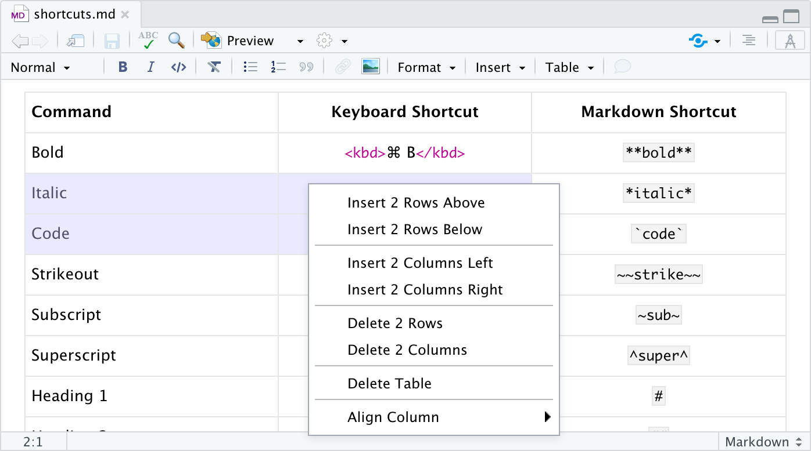
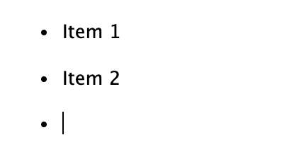
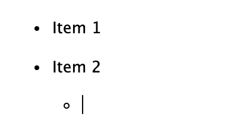
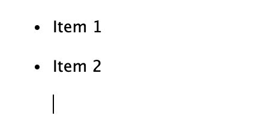
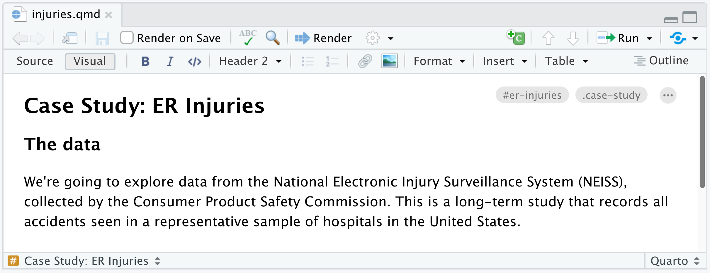
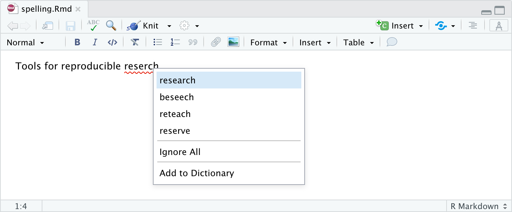
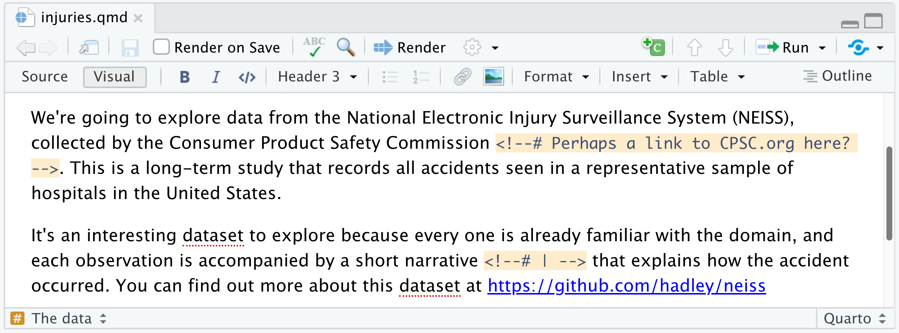
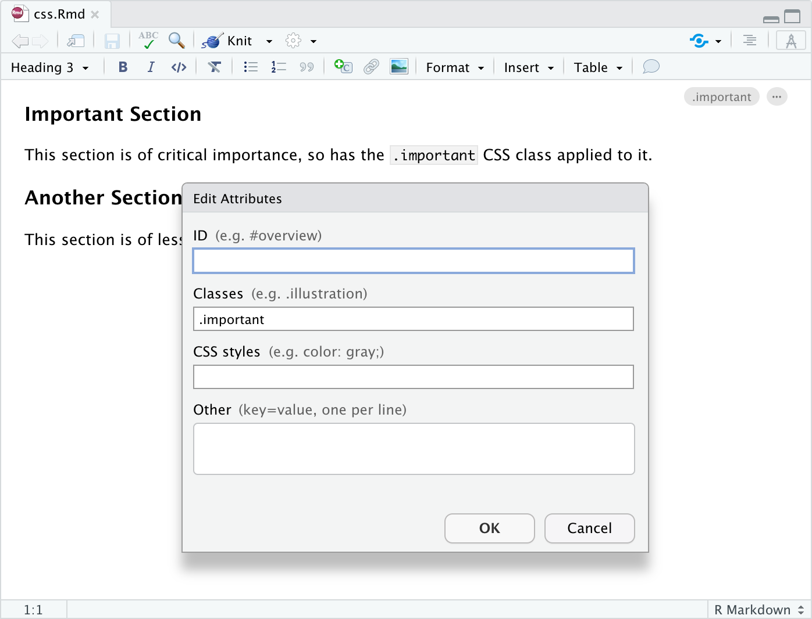
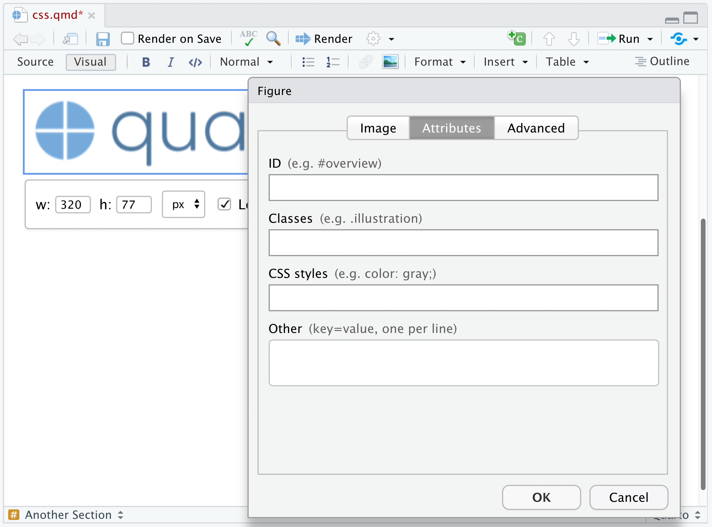
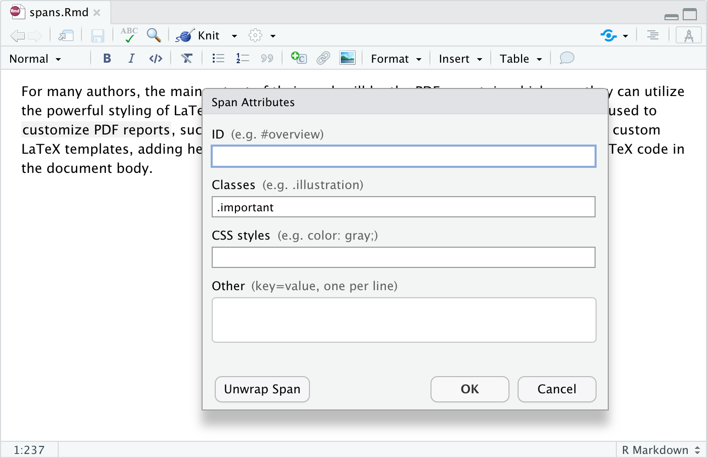

Content Editing
Visual mode supports editing all of Pandoc markdown. Standard formatting commands (headings, bold, italic, etc.) work just the way they do in a conventional word processor.
See the Using the Editor section for more details on how to access core editing commands. Note also that you can access all editing commands via keyboard shortcuts.
Editing of links, images, blockquotes, lists, tables, etc. is also available, as is the ability to specify Pandoc attributes and insert special characters and emojis.
Editing Tables
You can insert a table using the Table menu. You can then use either the main menu or a context menu to insert and delete table rows and columns:

Note that if you select multiple rows or columns the insert or delete command will behave accordingly. For example, to insert 2 rows, first select 2 rows then use the insert command.
When you make a selection of multiple rows and/or columns as illustrated above, you can also copy and paste groups of cells within the table.
Editing Lists
As described above, you can create a new list by just typing - or 1. at the beginning of an empty paragraph. To add items to the list, just press Enter within a list item. To exit the list, press Enter within an empty list item.
While this covers many simple list editing tasks, there is a variety of other actions you may want to take within lists, including creating nested lists and adding paragraphs or code blocks to an exiting list item. From an empty list item (pictured at left), the following keyboard gestures can be used to do this:
| Empty Item (enter to exit list) |
Tab (add sublist) |
Backspace (add block) |
|---|---|---|
|  |  |  |
You can also use Shift+Tab to lift a list item into the previous level.
Tight Lists
Markdown distinguishes between normal and tight lists, where tight lists have less vertical spacing between items. In markdown source code, you designate a tight list by having no empty lines between your list items.
Visual mode creates normal lists by default (you can change this behavior via Editor Options). You can toggle between normal and tight lists using the ⌥⌘ 9 keyboard shortcut. You can also change the list type using the Format -> Edit Attributes dialog (also accessible via the F4 shortcut). If you have existing tight lists in your markdown source files, they will remain so within the visual editor.
Pandoc Attributes
Several of Pandoc’s block types (e.g. headings, code blocks, and divs) enable you to specify a set of custom attributes. Attributes include IDs and class names, as well as arbitrary key-value pairs that are passed through to output formats (e.g. as attributes for HTML tags). For these block types, an edit button will appear at the the top right when your cursor is within the block:

Note that any ID as well as the first class specified within the attributes are also displayed. Click the edit button or use the F4 keyboard shortcut to edit the attributes.
Special Characters
Hard Line Breaks
You can insert a hard line break using the Insert -> Special Characters -> Hard Line Break command or via the ⇧ Enter keyboard shortcut.
Non-Breaking Spaces
You can insert a non-breaking space using the Insert -> Special Characters -> Non-Breaking Space command or via the ⌃ Space keyboard shortcut. Non-breaking spaces are displayed with an alternate background color to distinguish them from normal spaces.
A markdown non-breaking space will result in the character within HTML output and a ~ character within LaTeX output.
Emojis
To insert an emoji, you can use either the Insert menu or the requisite markdown shortcut plus auto-complete:
| Insert -> Special Characters -> Emoji… | Markdown Shortcut |
|---|---|
 |
 |
For markdown formats that support text representations of emojis (e.g. :grinning:), the text version will be written. For other formats the literal emoji character will be written. Currently, the gfm and hugo (with enableEmoji = true in the site config) formats both support text representation of emojis.
If you want to add support for markdown emoji output to another Quarto format, you can add the emoji extension to the from option in document metadata. For example:
---
title: "My Document"
from: markdown+emoji
---Unicode Symbols
To insert an arbitrary Unicode character, use Insert -> Special Characters -> Unicode…:

You can search for characters either by name or by entering an explicit Unicode code point (e.g. “U+0420”).
Smart Punctuation
When the Pandoc smart extension is enabled (which it is by default), straight quotes are interpreted as curly quotes, --- as em-dashes, -- as en-dashes, and ... as ellipses. In addition, non-breaking spaces are inserted after certain abbreviations, such as “Mr.”
Visual mode supports these same transformations (so when you type --- it becomes an em-dash). If you didn’t intend for this transformation to occur just hit backspace and it will be reverted.
Spell-Checking
When RStudio real time spell-checking is enabled (you can do this using Spelling preferences), misspelled words will be underlined as you type:

To resolve a spelling error, right-click on the misspelled word, then either choose an alternate spelling, ignore the word (which applies to the current document only), or add the word to your user dictionary (which applies to all documents).
If you ignore a word by mistake, right-click it again to unignore it. If you want to edit your personal dictionary, use the Edit User Dictionary… button located within Spelling preferences.
Commenting
When reviewing a document you often want to provide inline comments with suggested revisions. This is possible in Quarto using HTML comments (which are ignored by all output formats). Visual mode includes a command for inserting HTML comments as well as special highlighting treatment to easily parse out editing comments from surrounding text.

Note that the # prefix used in the comment is what triggers the special background highlighting. If you remove the # it will still be a valid HTML comment, but just won’t be highlighted as shown above.
You can insert an HTML comment using the Comment button on the toolbar or via the ⇧⌘ C keyboard shortcut. Remember, HTML comments won’t show up in rendered output so they are ideal both for review but also for leaving yourself to-do notes within a document.
CSS Styles
One of the benefits of authoring with markdown is that your content can be easily published to a wide variety of formats. This is possible in significant measure because of the limitations that markdown imposes: you author in terms of the structure and semantics of your content, rather than worrying about specifically how things will appear.
Sometimes however you know that you’ll be publishing to HTML, and you want to exert more control over how things look. In this case, you can use CSS (Cascading Style Sheets) along with markdown to do custom formatting. This section covers how to:
Define CSS styles for your document; and
Apply those styles to entities within your document.
If you are new to CSS, you may want to brush up on the basics before proceeding.
CSS styles apply only to HTML output, and will not have any impact on the formatting of other output types like PDF or MS Word.
Defining Styles
The best way to include CSS styles is to create an external stylesheet (e.g. styles.css), then include it within the output options of your document. For example:
---
title: "CSS Demo"
format:
html:
css: styles.css
---The styles.css file might look something like this:
.important {
color: maroon;
}
.illustration {
border: 1px solid rgb(230, 230, 230);
}Note that it’s also possible to define styles inline with a CSS code chunk, but we recommend using an external file for easier manageability.
Within a markdown document you can apply one or more CSS classes to various document entities including headings, images, divs, and spans. CSS classes are applied using pandoc attributes. Once you’ve applied a class to an entity, it will derive its formatting from the CSS properties of the specified class.
Headings
To add a CSS class to a heading, use the edit button at the top right of the heading that appears when your cursor is within it (or use the F4 keyboard shortcut):

Note the presence of the .important class within the Edit Attributes dialog.
CSS classes applied to headings affect all content beneath the heading (an HTML <section> tag is wrapped around the content by Pandoc), so heading classes are a great way to provide custom styles for entire sections of your document.
Note that the visual editor doesn’t currently render content using styles applied through CSS classes so you won’t see the custom formatting while editing. You will however see it when rendering and previewing the HTML version of the document.
Images
You can apply CSS classes to images (for example, to give them a special border) using the standard Image dialog. To do this, double-click the image (or use the F4 shortcut with the image selected) and apply the desired classes:

Note again that the visual editor won’t display your image with the applied CSS classes while editing, however when actually rendering the document to HTML you’ll see the styles reflected.
Divs
Divs are special entities that allow you to apply identifiers and/or styles to a region of a document. Divs are block elements (like paragraphs).
You can create divs using the Insert -> Div command, and you can apply attributes (including CSS classes) to divs the same way as you apply attributes to headings (clicking the edit button or using the F4 keyboard shortcut when you are within a div):

Note the presence of the .important class within the Div Attributes dialog.
Spans
Span are special entities that allow you to apply identifiers and/or styles to a region of text. Spans are inline formatting marks (like bold or italic).
Spans can be created by selecting text and using the Format -> Span command:

Here we’ve applied a span to the text “customize PDF reports” and we’ve used the span to apply the .important CSS class. Note that as with headings and images the formatting is not displayed in the visual editor, but will be visible when the document is rendered.